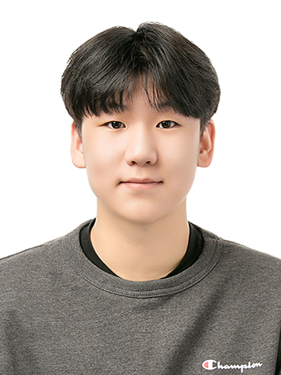

2026
What Do RL Spacecraft Guidance Policies Learn? Symbolic Distillation against a Known Control Law
NeurIPS 2026 Workshop under review
Independent Researcher
Developing interpretable RL policies and algorithms, with applications to aerospace systems.

I am an independent researcher and a student at Haeryong High School.
My research focuses on developing XAI-driven control algorithms and interpreting reinforcement learning policies, with applications to aerospace systems — particularly orbital dynamics. I am broadly interested in making autonomous control systems that are interpretable.
Outside of research, I co-founded Open-Age Academia, after running into the same wall as a high-school researcher without an institutional email or a lab behind me: the work was ready, but the systems around it weren't built for someone my age. Open-Age Academia exists to make that path clearer for the next person — a running list of venues and programs that judge submissions on merit, not affiliation.
NeurIPS 2026 Workshop under review
[Feel free to reach out if you'd like to collaborate or just chat about research.]